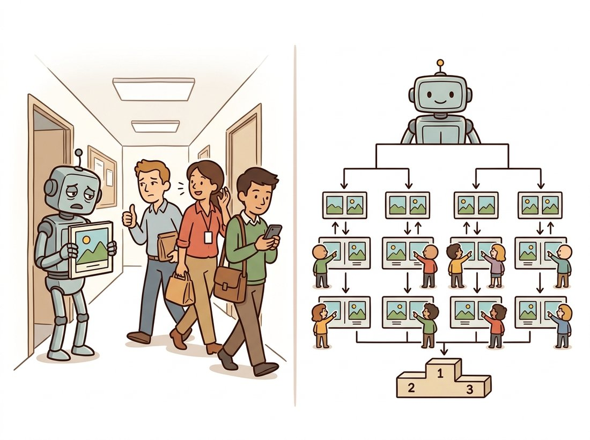

"Three colleagues glanced at my output, said 'looks fine, I guess,' and I declared victory. A statistician later explained that I had measured the lunchtime mood of three people, not the quality of anything."
A Generative Model With a Premature Confidence Interval
Because automatic metrics are proxies that can be gamed and diverge from what people actually value, human judgment is the ground truth of generative quality, and turning that judgment into a trustworthy number is a measurement problem with its own discipline. A casual "looks good" from a few colleagues is noise. A sound preference study controls the comparison (usually two-alternative forced choice), recruits enough raters and items to achieve statistical power, quantifies how much the raters agree (inter-rater reliability), and aggregates pairwise wins into a ranking with the Bradley-Terry or Elo model that powers modern arena leaderboards. The same human preference data, collected at scale, becomes the training signal for reward models and preference-tuned generators, closing the loop from evaluation to optimization.

Every automatic metric in Section 37.1 can be gamed, and for the questions people care about most (which image is more beautiful, which better follows a nuanced instruction, which hides a subtle artifact a person spots instantly) the only valid measurement is to ask people. The catch is that asking people badly is worse than not asking at all: a confident number from three distracted colleagues looks authoritative and means nothing. By the end of this section you will be able to design a preference study whose result actually means something and would replicate if someone else ran it. That is where the rigor of experimental design enters generative vision.
1. Why Humans, and Why It Is Hard Beginner
Three things make a generated image good in a way no Inception feature captures: aesthetic appeal, faithful adherence to a complex prompt, and the absence of the uncanny errors (extra fingers, garbled text, physically impossible lighting) that humans spot instantly and metrics shrug off. Asking people is the direct route, but human data is expensive, noisy, and full of biases. Raters anchor on the first option they see, prefer brighter or more saturated images regardless of the question asked, get tired and lazy halfway through a session, and disagree with each other in ways that are sometimes real signal and sometimes pure noise. A study that does not control for these produces a number that looks authoritative and means nothing. The defense is design: control what each rater sees, ask one precise question, and collect enough independent judgments that the noise averages out.
Asking a rater to score an image from 1 to 10 seems natural but is unreliable: one person's 7 is another's 9, the scale drifts over a session, and the numbers are not comparable across raters. Asking instead "which of these two is better?" sidesteps all of it. Humans are far more consistent at relative comparisons than absolute judgments, the comparison is invariant to each rater's private scale, and the pairwise outcomes aggregate cleanly into a ranking (subsection 4). This is why nearly every serious generative study uses forced-choice comparison rather than Likert scoring.
"Looks good to me" is the smallest possible study: one rater, one item, one trial, and a confidence interval that runs from minus infinity to plus infinity. Add two friends and a hallway and you have measured the building's lunch schedule, not your model. The cruel arithmetic of subsection 2 is that the slimmer your real advantage, the more comparisons you need to prove it: a model that is barely better has to work hardest to be believed. Signature phrase for the section: compare, do not score; and decide N before you collect, not after.
2. The Two-Alternative Forced-Choice Protocol Beginner
The workhorse design is two-alternative forced choice (2AFC): show a rater the same prompt rendered by two different models, side by side, in randomized left-right order, and force a choice of which is better on one stated axis (overall quality, or prompt alignment, or photorealism, pick one per study). Randomizing position defeats the left-side bias; forcing a choice (no "they are equal" escape hatch, or a separate explicit tie option counted carefully) yields cleaner statistics; asking one axis at a time stops raters from silently averaging incompatible criteria. Figure 37.2.1 lays out the design and the data it produces.
The two design parameters that decide whether the study has any power are the number of distinct prompts (item diversity) and the number of independent judgments per pair (statistical depth). Too few prompts and you measure quality on a handful of cherry-picked scenes; too few judgments and your win rate is dominated by sampling noise. A back-of-the-envelope power calculation tells you how many comparisons you need to detect a given win-rate gap.
import math
from scipy import stats
def comparisons_needed(p_win, alpha=0.05, power=0.80):
"""How many 2AFC judgments to distinguish win rate p_win from 0.5.
p_win: the true win rate you want to be able to detect (e.g. 0.55).
Returns the approximate number of independent comparisons required.
"""
z_a = stats.norm.ppf(1 - alpha / 2) # two-sided significance
z_b = stats.norm.ppf(power) # desired power
effect = abs(p_win - 0.5)
var = p_win * (1 - p_win)
n = ((z_a + z_b) ** 2 * var) / (effect ** 2)
return math.ceil(n)
print(comparisons_needed(0.55)) # detect a 55/45 split -> 778
print(comparisons_needed(0.60)) # detect a 60/40 split -> 188
Before reading on, call comparisons_needed for a sweep of win rates from a near-tie to a landslide, for example for p in [0.52, 0.55, 0.60, 0.70]: print(p, comparisons_needed(p)). Watch the required count grow as the gap to 0.5 shrinks: each step closer to a coin flip roughly quadruples the comparisons you need, because the count scales with one over the squared effect size. The number for 0.52 is the one that surprises people, and feeling that curve in your own terminal is what makes "decide N before you collect" stop sounding like bureaucracy and start sounding like arithmetic.
The single most common failure in generative human evaluation is collecting a convenient number of ratings, finding a difference, and reporting it without checking whether the study could have detected that difference by chance. A 53 percent win rate over 100 comparisons is statistically indistinguishable from a coin flip. The power calculation above turns "how many raters do I need" from a guess into arithmetic: pick the smallest gap you care about, and it tells you the comparisons required. This is the same pre-registration discipline that protects any experiment, applied to image preference.
3. Inter-Rater Agreement: Is the Signal Real? Intermediate
Suppose your raters split 60-40 in favor of Model A. Before you trust that, ask whether the raters agree with each other. If different raters pick essentially at random and the 60-40 split is an aggregation artifact, the result is meaningless. Inter-rater reliability quantifies agreement beyond what chance alone would produce. For two raters on categorical choices, Cohen's kappa is standard; for many raters and missing data, Krippendorff's alpha is the general tool. Both correct for chance agreement: a value of 1 is perfect agreement, 0 is chance-level, and negative values mean systematic disagreement. The code computes Cohen's kappa for a pair of raters.
def cohens_kappa(rater_a, rater_b):
"""Chance-corrected agreement for two raters on the same items.
rater_a, rater_b: lists of categorical choices ("A" or "B") on the
same set of comparison trials, in the same order.
"""
n = len(rater_a)
cats = set(rater_a) | set(rater_b)
observed = sum(x == y for x, y in zip(rater_a, rater_b)) / n
# Expected agreement if both rated independently at their own base rates.
expected = sum(
(rater_a.count(c) / n) * (rater_b.count(c) / n) for c in cats
)
return (observed - expected) / (1 - expected)
a = ["A", "A", "B", "A", "B", "B", "A", "B"]
b = ["A", "B", "B", "A", "B", "A", "A", "B"]
print(f"kappa = {cohens_kappa(a, b):.3f}") # kappa = 0.500 (moderate)
Low agreement is not always a failure of the raters; sometimes it tells you the question is genuinely ambiguous or that the two models are close enough that the difference is below human perceptual resolution. A study that reports a win rate without an agreement statistic is incomplete, because the reader cannot tell whether the preference is a real signal or rater noise dressed up as one.
4. From Pairwise Wins to a Ranking: Bradley-Terry and Elo Intermediate
When you compare more than two models, you do not run every pair to convergence; you collect a sparse, irregular set of pairwise outcomes and need a single ranking out of them. The Bradley-Terry model assigns each model a latent strength score $s_i$ and predicts the probability that model $i$ beats model $j$ as a logistic function of the score difference:
Here $\sigma$ is the same logistic sigmoid you met training classifiers, squashing the score gap $s_i - s_j$ into a win probability between 0 and 1; equal strengths give the gap zero and the probability one-half, exactly the coin flip you would expect between evenly matched models. Fitting the scores by maximum likelihood to the observed win-loss matrix gives a principled global ranking even from sparse comparisons. The Elo rating familiar from chess is an online approximation of the same model that updates scores incrementally after each match, which is why public "arena" leaderboards (where users vote on anonymized model outputs in a stream of head-to-head battles) report Elo or Bradley-Terry scores. The function below fits Bradley-Terry strengths from a win matrix by gradient ascent.
import numpy as np
def bradley_terry(win_matrix, iters=200, lr=0.1):
"""Fit latent strengths from a win matrix W[i,j] = times i beat j."""
n = win_matrix.shape[0]
s = np.zeros(n) # init all strengths equal
for _ in range(iters):
grad = np.zeros(n)
for i in range(n):
for j in range(n):
if i == j:
continue
games = win_matrix[i, j] + win_matrix[j, i]
if games == 0:
continue
p_ij = 1 / (1 + np.exp(-(s[i] - s[j]))) # predicted P(i beats j)
grad[i] += win_matrix[i, j] - games * p_ij # observed minus expected
s += lr * grad
s -= s.mean() # fix the free additive constant
return s
# Three models; rows beat columns this many times.
W = np.array([[0, 70, 85],
[30, 0, 60],
[15, 40, 0]], dtype=float)
print(np.round(bradley_terry(W), 3)) # e.g. [ 0.74 0.03 -0.77 ] -> model 0 strongest
Who: the model-quality team at a consumer photo-editing company, 2024, choosing which of five fine-tuned diffusion checkpoints to ship. Situation: FID and CLIPScore (from Section 37.1) ranked the five checkpoints inconsistently, and the product manager did not trust any single number. Problem: running full pairwise studies for all ten model pairs to statistical convergence would have cost weeks of rater time they did not have. Decision: they built an internal arena: a queue of real user prompts rendered by random pairs of checkpoints, shown blind to a panel of trained raters who voted one per battle, with outcomes fed to a Bradley-Terry fit and Krippendorff's alpha tracked live. Result: after about 3,000 sparse battles the ranking stabilized with a clear top checkpoint that FID had placed third, agreement sat at a healthy alpha around 0.55, and the chosen model measurably raised user retention after launch. Lesson: sparse pairwise comparison plus a Bradley-Terry fit extracts a trustworthy global ranking far more cheaply than exhaustive studies, and it surfaced a winner the automatic metrics had hidden.
5. From Preference Data to Trained Models Advanced
Once you can collect human preferences at scale, they stop being only an evaluation tool and become a training signal. A reward model is a network trained on the preference pairs to predict which of two images a human would choose; structurally it is a Bradley-Terry head on top of an image (and often text) encoder, optimizing exactly the logistic objective of subsection 4 but with learned features instead of fixed per-model scores. Once trained, the reward model scores any new image, so it serves both as a fast automatic stand-in for human judgment (this is precisely what ImageReward and PickScore from Section 37.1 are) and as the optimization target for preference tuning, where a generator is fine-tuned to produce images the reward model rates highly. This mirrors the reinforcement-learning-from-human-feedback (RLHF) recipe that aligned large language models, transplanted to diffusion via methods like Diffusion-DPO (Direct Preference Optimization applied to a diffusion model). The thread connects to the transfer-learning recipes of Chapter 21: the reward model is a fine-tuned foundation encoder of the kind built in Chapter 25, and the preference-tuned generator is the same diffusion backbone from Chapter 33 nudged by a new loss.
The most active 2023 to 2025 thread here is adapting preference optimization to diffusion models. Diffusion-DPO (Wallace et al., 2023, arXiv:2311.12908) ported Direct Preference Optimization to the diffusion objective, fine-tuning Stable Diffusion XL on the Pick-a-Pic dataset of hundreds of thousands of human pairwise preferences and measurably improving human-rated quality without a separate reward-model rollout. Reward models such as ImageReward (Xu et al., 2023, arXiv:2304.05977), PickScore (Kirstain et al., 2023, arXiv:2305.01569), and HPSv2 (Wu et al., 2023, arXiv:2306.09341) are now standard both as evaluation metrics and as differentiable reward signals for direct reward fine-tuning of samplers. The open question driving current work is reward hacking: a generator optimized hard against a fixed reward model learns to exploit its blind spots, producing images the reward model loves and humans find strange, which is why the human arena of subsection 4 remains the final court of appeal even when reward models do the day-to-day scoring.
A colleague proposes evaluating two models by having raters score each image 1 to 10 and comparing the mean scores. List three specific ways this design produces a misleading result that a randomized 2AFC design would avoid, and explain how each of position randomization, single-axis questioning, and the relative-comparison format addresses a different one of those problems.
Write a simulation in which the true win rate of Model A is exactly 0.50 (the models are equal). Draw 100 comparisons, compute the observed win rate, and repeat 10,000 times. What fraction of these "studies" report a win rate of 0.55 or higher purely by chance? Now redo it with the comparison count that comparisons_needed(0.55) from subsection 2 recommends and confirm the false-positive rate drops. Write two sentences on what this means for trusting a small study's headline number.
Construct two synthetic 2AFC datasets that both produce a 60-40 aggregate win rate for Model A. In the first, every rater individually prefers A about 60 percent of the time (high agreement). In the second, half the raters always pick A and half always pick B, with A getting slightly more raters (low agreement). Compute Cohen's kappa for representative rater pairs in each. Explain why the identical headline win rate should lead to very different conclusions, and what additional study you would run for the low-agreement case.